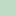
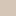
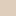

<!doctype html>
<html lang="en">
    <head>
        <meta charset="utf-8">
        <meta http-equiv="X-UA-Compatible" content="IE=edge">
        <meta name="viewport" content="initial-scale=1,user-scalable=no,maximum-scale=1,width=device-width">
        <meta name="mobile-web-app-capable" content="yes">
        <meta name="apple-mobile-web-app-capable" content="yes">
        <link rel="stylesheet" href="css/leaflet.css">
        <link rel="stylesheet" href="css/L.Control.Layers.Tree.css">
        <link rel="stylesheet" href="css/qgis2web.css">
        <link rel="stylesheet" href="css/fontawesome-all.min.css">
        <link rel="stylesheet" href="css/MarkerCluster.css">
        <link rel="stylesheet" href="css/MarkerCluster.Default.css">
        <link rel="stylesheet" href="css/leaflet-search.css">
        <link rel="stylesheet" href="css/leaflet-measure.css">
        <style>
        html, body, #map {
            width: 100%;
            height: 100%;
            padding: 0;
            margin: 0;
        }
        </style>
        <title></title>
    </head>
    <body>
        <div id="map">
        </div>
        <script src="js/qgis2web_expressions.js"></script>
        <script src="js/leaflet.js"></script>
        <script src="js/L.Control.Layers.Tree.min.js"></script>
        <script src="js/leaflet.rotatedMarker.js"></script>
        <script src="js/leaflet.pattern.js"></script>
        <script src="js/leaflet-hash.js"></script>
        <script src="js/Autolinker.min.js"></script>
        <script src="js/rbush.min.js"></script>
        <script src="js/labelgun.min.js"></script>
        <script src="js/labels.js"></script>
        <script src="js/leaflet-measure.js"></script>
        <script src="js/leaflet.markercluster.js"></script>
        <script src="js/leaflet-search.js"></script>
        <script src="data/Entorno_1.js"></script>
        <script src="data/Tekoha_2.js"></script>
        <script src="data/Ogai_3.js"></script>
        <script src="data/Ogaidistribucion_4.js"></script>
        <script src="data/Vivienda_5.js"></script>
        <script>
        var map = L.map('map', {
            zoomControl:false, maxZoom:28, minZoom:12
        }).fitBounds([[-25.036025038933104,-55.57548778542619],[-24.992166115925077,-55.50102727620328]]);
        var hash = new L.Hash(map);
        map.attributionControl.setPrefix('<a href="https://github.com/tomchadwin/qgis2web" target="_blank">qgis2web</a> &middot; <a href="https://leafletjs.com" title="A JS library for interactive maps">Leaflet</a> &middot; <a href="https://qgis.org">QGIS</a>');
        var autolinker = new Autolinker({truncate: {length: 30, location: 'smart'}});
        // remove popup's row if "visible-with-data"
        function removeEmptyRowsFromPopupContent(content, feature) {
         var tempDiv = document.createElement('div');
         tempDiv.innerHTML = content;
         var rows = tempDiv.querySelectorAll('tr');
         for (var i = 0; i < rows.length; i++) {
             var td = rows[i].querySelector('td.visible-with-data');
             var key = td ? td.id : '';
             if (td && td.classList.contains('visible-with-data') && feature.properties[key] == null) {
                 rows[i].parentNode.removeChild(rows[i]);
             }
         }
         return tempDiv.innerHTML;
        }
        // add class to format popup if it contains media
		function addClassToPopupIfMedia(content, popup) {
			var tempDiv = document.createElement('div');
			tempDiv.innerHTML = content;
			if (tempDiv.querySelector('td img')) {
				popup._contentNode.classList.add('media');
					// Delay to force the redraw
					setTimeout(function() {
						popup.update();
					}, 10);
			} else {
				popup._contentNode.classList.remove('media');
			}
		}
        var zoomControl = L.control.zoom({
            position: 'topleft'
        }).addTo(map);
        var measureControl = new L.Control.Measure({
            position: 'topleft',
            primaryLengthUnit: 'meters',
            secondaryLengthUnit: 'kilometers',
            primaryAreaUnit: 'sqmeters',
            secondaryAreaUnit: 'hectares'
        });
        measureControl.addTo(map);
        document.getElementsByClassName('leaflet-control-measure-toggle')[0].innerHTML = '';
        document.getElementsByClassName('leaflet-control-measure-toggle')[0].className += ' fas fa-ruler';
        var bounds_group = new L.featureGroup([]);
        function setBounds() {
        }
        map.createPane('pane_GoogleSatellite_0');
        map.getPane('pane_GoogleSatellite_0').style.zIndex = 400;
        var layer_GoogleSatellite_0 = L.tileLayer('https://mt1.google.com/vt/lyrs=s&x={x}&y={y}&z={z}', {
            pane: 'pane_GoogleSatellite_0',
            opacity: 1.0,
            attribution: '<a href="https://www.google.at/permissions/geoguidelines/attr-guide.html">Map data ©2015 Google</a>',
            minZoom: 12,
            maxZoom: 28,
            minNativeZoom: 0,
            maxNativeZoom: 20
        });
        layer_GoogleSatellite_0;
        map.addLayer(layer_GoogleSatellite_0);
        function pop_Entorno_1(feature, layer) {
            var popupContent = '<table>\
                    <tr>\
                        <td colspan="2">' + (feature.properties['Layer'] !== null ? autolinker.link(feature.properties['Layer'].toLocaleString()) : '') + '</td>\
                    </tr>\
                </table>';
            var content = removeEmptyRowsFromPopupContent(popupContent, feature);
			layer.on('popupopen', function(e) {
				addClassToPopupIfMedia(content, e.popup);
			});
			layer.bindPopup(content, { maxHeight: 400 });
        }

        function style_Entorno_1_0(feature) {
            switch(String(feature.properties['Layer'])) {
                case 'Bosque':
                    return {
                pane: 'pane_Entorno_1',
                stroke: false, 
                fill: true,
                fillOpacity: 1,
                fillColor: 'rgba(169,205,178,0.7490196078431373)',
                interactive: true,
            }
                    break;
                case 'Caminos':
                    return {
                pane: 'pane_Entorno_1',
                stroke: false, 
                fill: true,
                fillOpacity: 1,
                fillColor: 'rgba(200,180,160,0.7490196078431373)',
                interactive: true,
            }
                    break;
                case 'Caminos secundarios':
                    return {
                pane: 'pane_Entorno_1',
                stroke: false, 
                fill: true,
                fillOpacity: 1,
                fillColor: 'rgba(209,192,164,0.7490196078431373)',
                interactive: true,
            }
                    break;
                case 'Chacras domésticas':
                    return {
                pane: 'pane_Entorno_1',
                stroke: false, 
                fill: true,
                fillOpacity: 1,
                fillColor: 'rgba(255,211,177,0.7490196078431373)',
                interactive: true,
            }
                    break;
                case 'Cultivo':
                    return {
                pane: 'pane_Entorno_1',
                stroke: false, 
                fill: true,
                fillOpacity: 1,
                fillColor: 'rgba(243,229,181,0.7490196078431373)',
                interactive: true,
            }
                    break;
                case 'Espacio comunitario':
                    return {
                pane: 'pane_Entorno_1',
                stroke: false, 
                fill: true,
                fillOpacity: 1,
                fillColor: 'rgba(227,211,194,0.7490196078431373)',
                interactive: true,
            }
                    break;
                case 'Espacio doméstico':
                    return {
                pane: 'pane_Entorno_1',
                stroke: false, 
                fill: true,
                fillOpacity: 1,
                fillColor: 'rgba(232,191,169,0.7490196078431373)',
                interactive: true,
            }
                    break;
                case 'Humedales':
                    return {
                pane: 'pane_Entorno_1',
                stroke: false, 
                fill: true,
                fillOpacity: 1,
                fillColor: 'rgba(175,212,200,0.7490196078431373)',
                interactive: true,
            }
                    break;
                case 'Río':
                    return {
                pane: 'pane_Entorno_1',
                stroke: false, 
                fill: true,
                fillOpacity: 1,
                fillColor: 'rgba(141,201,217,0.7019607843137254)',
                interactive: true,
            }
                    break;
            }
        }
        map.createPane('pane_Entorno_1');
        map.getPane('pane_Entorno_1').style.zIndex = 401;
        map.getPane('pane_Entorno_1').style['mix-blend-mode'] = 'normal';
        var layer_Entorno_1 = new L.geoJson(json_Entorno_1, {
            attribution: '',
            interactive: true,
            dataVar: 'json_Entorno_1',
            layerName: 'layer_Entorno_1',
            pane: 'pane_Entorno_1',
            onEachFeature: pop_Entorno_1,
            style: style_Entorno_1_0,
        });
        bounds_group.addLayer(layer_Entorno_1);
        map.addLayer(layer_Entorno_1);
        function pop_Tekoha_2(feature, layer) {
            var popupContent = '<table>\
                    <tr>\
                        <td colspan="2">' + (feature.properties['fid'] !== null ? autolinker.link(feature.properties['fid'].toLocaleString()) : '') + '</td>\
                    </tr>\
                    <tr>\
                        <td colspan="2">' + (feature.properties['Layer'] !== null ? autolinker.link(feature.properties['Layer'].toLocaleString()) : '') + '</td>\
                    </tr>\
                </table>';
            var content = removeEmptyRowsFromPopupContent(popupContent, feature);
			layer.on('popupopen', function(e) {
				addClassToPopupIfMedia(content, e.popup);
			});
			layer.bindPopup(content, { maxHeight: 400 });
        }

        function style_Tekoha_2_0() {
            return {
                pane: 'pane_Tekoha_2',
                opacity: 1,
                color: 'rgba(161,56,42,1.0)',
                dashArray: '15.0,3.0',
                lineCap: 'butt',
                lineJoin: 'miter',
                weight: 3.0, 
                fillOpacity: 0,
                interactive: false,
            }
        }
        map.createPane('pane_Tekoha_2');
        map.getPane('pane_Tekoha_2').style.zIndex = 402;
        map.getPane('pane_Tekoha_2').style['mix-blend-mode'] = 'normal';
        var layer_Tekoha_2 = new L.geoJson(json_Tekoha_2, {
            attribution: '',
            interactive: false,
            dataVar: 'json_Tekoha_2',
            layerName: 'layer_Tekoha_2',
            pane: 'pane_Tekoha_2',
            onEachFeature: pop_Tekoha_2,
            style: style_Tekoha_2_0,
        });
        bounds_group.addLayer(layer_Tekoha_2);
        map.addLayer(layer_Tekoha_2);
        function pop_Ogai_3(feature, layer) {
            var popupContent = '<table>\
                    <tr>\
                        <td colspan="2">' + (feature.properties['fid'] !== null ? autolinker.link(feature.properties['fid'].toLocaleString()) : '') + '</td>\
                    </tr>\
                    <tr>\
                        <td colspan="2">' + (feature.properties['Layer'] !== null ? autolinker.link(feature.properties['Layer'].toLocaleString()) : '') + '</td>\
                    </tr>\
                </table>';
            var content = removeEmptyRowsFromPopupContent(popupContent, feature);
			layer.on('popupopen', function(e) {
				addClassToPopupIfMedia(content, e.popup);
			});
			layer.bindPopup(content, { maxHeight: 400 });
        }

        function style_Ogai_3_0() {
            return {
                pane: 'pane_Ogai_3',
                stroke: false, 
                fill: true,
                fillOpacity: 1,
                fillColor: 'rgba(166,86,86,1.0)',
                interactive: false,
            }
        }
        map.createPane('pane_Ogai_3');
        map.getPane('pane_Ogai_3').style.zIndex = 403;
        map.getPane('pane_Ogai_3').style['mix-blend-mode'] = 'normal';
        var layer_Ogai_3 = new L.geoJson(json_Ogai_3, {
            attribution: '',
            interactive: false,
            dataVar: 'json_Ogai_3',
            layerName: 'layer_Ogai_3',
            pane: 'pane_Ogai_3',
            onEachFeature: pop_Ogai_3,
            style: style_Ogai_3_0,
        });
        bounds_group.addLayer(layer_Ogai_3);
        map.addLayer(layer_Ogai_3);
        function pop_Ogaidistribucion_4(feature, layer) {
            var popupContent = '<table>\
                    <tr>\
                        <td colspan="2">' + (feature.properties['fid'] !== null ? autolinker.link(feature.properties['fid'].toLocaleString()) : '') + '</td>\
                    </tr>\
                    <tr>\
                        <td colspan="2">' + (feature.properties['Layer'] !== null ? autolinker.link(feature.properties['Layer'].toLocaleString()) : '') + '</td>\
                    </tr>\
                </table>';
            var content = removeEmptyRowsFromPopupContent(popupContent, feature);
			layer.on('popupopen', function(e) {
				addClassToPopupIfMedia(content, e.popup);
			});
			layer.bindPopup(content, { maxHeight: 400 });
        }

        function style_Ogaidistribucion_4_0() {
            return {
                pane: 'pane_Ogaidistribucion_4',
                opacity: 1,
                color: 'rgba(255,255,255,1.0)',
                dashArray: '',
                lineCap: 'square',
                lineJoin: 'bevel',
                weight: 1.0,
                fillOpacity: 0,
                interactive: false,
            }
        }
        map.createPane('pane_Ogaidistribucion_4');
        map.getPane('pane_Ogaidistribucion_4').style.zIndex = 404;
        map.getPane('pane_Ogaidistribucion_4').style['mix-blend-mode'] = 'normal';
        var layer_Ogaidistribucion_4 = new L.geoJson(json_Ogaidistribucion_4, {
            attribution: '',
            interactive: false,
            dataVar: 'json_Ogaidistribucion_4',
            layerName: 'layer_Ogaidistribucion_4',
            pane: 'pane_Ogaidistribucion_4',
            onEachFeature: pop_Ogaidistribucion_4,
            style: style_Ogaidistribucion_4_0,
        });
        bounds_group.addLayer(layer_Ogaidistribucion_4);
        map.addLayer(layer_Ogaidistribucion_4);
        function pop_Vivienda_5(feature, layer) {
            var popupContent = '<table>\
                    <tr>\
                        <th scope="row">Nº</th>\
                        <td class="visible-with-data" id="Nº">' + (feature.properties['Nº'] !== null ? autolinker.link(feature.properties['Nº'].toLocaleString()) : '') + '</td>\
                    </tr>\
                    <tr>\
                        <th scope="row">Tipo</th>\
                        <td class="visible-with-data" id="Tipo">' + (feature.properties['Tipo'] !== null ? autolinker.link(feature.properties['Tipo'].toLocaleString()) : '') + '</td>\
                    </tr>\
                    <tr>\
                        <th scope="row">Nº hab</th>\
                        <td class="visible-with-data" id="Nº hab">' + (feature.properties['Nº hab'] !== null ? autolinker.link(feature.properties['Nº hab'].toLocaleString()) : '') + '</td>\
                    </tr>\
                    <tr>\
                        <th scope="row">Mujeres</th>\
                        <td class="visible-with-data" id="Mujeres">' + (feature.properties['Mujeres'] !== null ? autolinker.link(feature.properties['Mujeres'].toLocaleString()) : '') + '</td>\
                    </tr>\
                    <tr>\
                        <th scope="row">Hombres</th>\
                        <td class="visible-with-data" id="Hombres">' + (feature.properties['Hombres'] !== null ? autolinker.link(feature.properties['Hombres'].toLocaleString()) : '') + '</td>\
                    </tr>\
                    <tr>\
                        <th scope="row">Niñas</th>\
                        <td class="visible-with-data" id="Niñas">' + (feature.properties['Niñas'] !== null ? autolinker.link(feature.properties['Niñas'].toLocaleString()) : '') + '</td>\
                    </tr>\
                    <tr>\
                        <th scope="row">Niños</th>\
                        <td class="visible-with-data" id="Niños">' + (feature.properties['Niños'] !== null ? autolinker.link(feature.properties['Niños'].toLocaleString()) : '') + '</td>\
                    </tr>\
                    <tr>\
                        <th scope="row">Trabajo M</th>\
                        <td class="visible-with-data" id="Trabajo M">' + (feature.properties['Trabajo M'] !== null ? autolinker.link(feature.properties['Trabajo M'].toLocaleString()) : '') + '</td>\
                    </tr>\
                    <tr>\
                        <th scope="row">Trabajo H</th>\
                        <td class="visible-with-data" id="Trabajo H">' + (feature.properties['Trabajo H'] !== null ? autolinker.link(feature.properties['Trabajo H'].toLocaleString()) : '') + '</td>\
                    </tr>\
                    <tr>\
                        <th scope="row">Escuela</th>\
                        <td class="visible-with-data" id="Escuela">' + (feature.properties['Escuela'] !== null ? autolinker.link(feature.properties['Escuela'].toLocaleString()) : '') + '</td>\
                    </tr>\
                    <tr>\
                        <th scope="row">Jardín</th>\
                        <td class="visible-with-data" id="Jardín">' + (feature.properties['Jardín'] !== null ? autolinker.link(feature.properties['Jardín'].toLocaleString()) : '') + '</td>\
                    </tr>\
                    <tr>\
                        <th scope="row">Árboles</th>\
                        <td class="visible-with-data" id="Árboles">' + (feature.properties['Árboles'] !== null ? autolinker.link(feature.properties['Árboles'].toLocaleString()) : '') + '</td>\
                    </tr>\
                    <tr>\
                        <th scope="row">Huerta</th>\
                        <td class="visible-with-data" id="Huerta">' + (feature.properties['Huerta'] !== null ? autolinker.link(feature.properties['Huerta'].toLocaleString()) : '') + '</td>\
                    </tr>\
                    <tr>\
                        <th scope="row">Chacra</th>\
                        <td class="visible-with-data" id="Chacra">' + (feature.properties['Chacra'] !== null ? autolinker.link(feature.properties['Chacra'].toLocaleString()) : '') + '</td>\
                    </tr>\
                    <tr>\
                        <th scope="row">Gallinero</th>\
                        <td class="visible-with-data" id="Gallinero">' + (feature.properties['Gallinero'] !== null ? autolinker.link(feature.properties['Gallinero'].toLocaleString()) : '') + '</td>\
                    </tr>\
                    <tr>\
                        <th scope="row">Agua</th>\
                        <td class="visible-with-data" id="Agua">' + (feature.properties['Agua'] !== null ? autolinker.link(feature.properties['Agua'].toLocaleString()) : '') + '</td>\
                    </tr>\
                    <tr>\
                        <th scope="row">Energía</th>\
                        <td class="visible-with-data" id="Energía">' + (feature.properties['Energía'] !== null ? autolinker.link(feature.properties['Energía'].toLocaleString()) : '') + '</td>\
                    </tr>\
                    <tr>\
                        <th scope="row">Baño</th>\
                        <td class="visible-with-data" id="Baño">' + (feature.properties['Baño'] !== null ? autolinker.link(feature.properties['Baño'].toLocaleString()) : '') + '</td>\
                    </tr>\
                    <tr>\
                        <th scope="row">Juegos</th>\
                        <td class="visible-with-data" id="Juegos">' + (feature.properties['Juegos'] !== null ? autolinker.link(feature.properties['Juegos'].toLocaleString()) : '') + '</td>\
                    </tr>\
                    <tr>\
                        <th scope="row">Foto 1</th>\
                        <td class="visible-with-data" id="Foto 1">' + (feature.properties['Foto 1'] !== null ? autolinker.link(feature.properties['Foto 1'].toLocaleString()) : '') + '</td>\
                    </tr>\
                    <tr>\
                        <th scope="row">Foto 2</th>\
                        <td class="visible-with-data" id="Foto 2">' + (feature.properties['Foto 2'] !== null ? autolinker.link(feature.properties['Foto 2'].toLocaleString()) : '') + '</td>\
                    </tr>\
                    <tr>\
                        <th scope="row">Mapa</th>\
                        <td class="visible-with-data" id="Mapa">' + (feature.properties['Mapa'] !== null ? autolinker.link(feature.properties['Mapa'].toLocaleString()) : '') + '</td>\
                    </tr>\
                </table>';
            var content = removeEmptyRowsFromPopupContent(popupContent, feature);
			layer.on('popupopen', function(e) {
				addClassToPopupIfMedia(content, e.popup);
			});
			layer.bindPopup(content, { maxHeight: 400 });
        }

        function style_Vivienda_5_0() {
            return {
                pane: 'pane_Vivienda_5',
                radius: 6.0,
                opacity: 1,
                color: 'rgba(35,35,35,0.0)',
                dashArray: '',
                lineCap: 'butt',
                lineJoin: 'miter',
                weight: 1,
                fill: true,
                fillOpacity: 1,
                fillColor: 'rgba(255,9,75,1.0)',
                interactive: true,
            }
        }
        map.createPane('pane_Vivienda_5');
        map.getPane('pane_Vivienda_5').style.zIndex = 405;
        map.getPane('pane_Vivienda_5').style['mix-blend-mode'] = 'normal';
        var layer_Vivienda_5 = new L.geoJson(json_Vivienda_5, {
            attribution: '',
            interactive: true,
            dataVar: 'json_Vivienda_5',
            layerName: 'layer_Vivienda_5',
            pane: 'pane_Vivienda_5',
            onEachFeature: pop_Vivienda_5,
            pointToLayer: function (feature, latlng) {
                var context = {
                    feature: feature,
                    variables: {}
                };
                return L.circleMarker(latlng, style_Vivienda_5_0(feature));
            },
        });
        var cluster_Vivienda_5 = new L.MarkerClusterGroup({showCoverageOnHover: false,
            spiderfyDistanceMultiplier: 2});
        cluster_Vivienda_5.addLayer(layer_Vivienda_5);

        bounds_group.addLayer(layer_Vivienda_5);
        cluster_Vivienda_5.addTo(map);
        var baseMaps = {};
        var overlaysTree = [
            {label: ' Vivienda', layer: cluster_Vivienda_5},
            {label: ' Ogai distribucion', layer: layer_Ogaidistribucion_4},
            {label: ' Ogai', layer: layer_Ogai_3},
            {label: ' Tekoha', layer: layer_Tekoha_2},
            {label: 'Entorno<br /><table><tr><td style="text-align: center;"></td><td>Bosque</td></tr><tr><td style="text-align: center;"></td><td>Caminos</td></tr><tr><td style="text-align: center;"></td><td>Caminos secundarios</td></tr><tr><td style="text-align: center;"></td><td>Chacras domésticas</td></tr><tr><td style="text-align: center;"></td><td>Cultivo</td></tr><tr><td style="text-align: center;"></td><td>Espacio comunitario</td></tr><tr><td style="text-align: center;"></td><td>Espacio doméstico</td></tr><tr><td style="text-align: center;"></td><td>Humedales</td></tr><tr><td style="text-align: center;"></td><td>Río</td></tr></table>', layer: layer_Entorno_1},
            {label: "Google Satellite", layer: layer_GoogleSatellite_0},]
        var lay = L.control.layers.tree(null, overlaysTree,{
            //namedToggle: true,
            //selectorBack: false,
            //closedSymbol: '&#8862; &#x1f5c0;',
            //openedSymbol: '&#8863; &#x1f5c1;',
            //collapseAll: 'Collapse all',
            //expandAll: 'Expand all',
            collapsed: false, 
        });
        lay.addTo(map);
		document.addEventListener("DOMContentLoaded", function() {
            // set new Layers List height which considers toggle icon
            function newLayersListHeight() {
                var layerScrollbarElement = document.querySelector('.leaflet-control-layers-scrollbar');
                if (layerScrollbarElement) {
                    var layersListElement = document.querySelector('.leaflet-control-layers-list');
                    var originalHeight = layersListElement.style.height 
                        || window.getComputedStyle(layersListElement).height;
                    var newHeight = parseFloat(originalHeight) - 50;
                    layersListElement.style.height = newHeight + 'px';
                }
            }
            var isLayersListExpanded = true;
            var controlLayersElement = document.querySelector('.leaflet-control-layers');
            var toggleLayerControl = document.querySelector('.leaflet-control-layers-toggle');
            // toggle Collapsed/Expanded and apply new Layers List height
            toggleLayerControl.addEventListener('click', function() {
                if (isLayersListExpanded) {
                    controlLayersElement.classList.remove('leaflet-control-layers-expanded');
                } else {
                    controlLayersElement.classList.add('leaflet-control-layers-expanded');
                }
                isLayersListExpanded = !isLayersListExpanded;
                newLayersListHeight()
            });	
			// apply new Layers List height if toggle layerstree
			if (controlLayersElement) {
				controlLayersElement.addEventListener('click', function(event) {
					var toggleLayerHeaderPointer = event.target.closest('.leaflet-layerstree-header-pointer span');
					if (toggleLayerHeaderPointer) {
						newLayersListHeight();
					}
				});
			}
            // Collapsed/Expanded at Start to apply new height
            setTimeout(function() {
                toggleLayerControl.click();
            }, 10);
            setTimeout(function() {
                toggleLayerControl.click();
            }, 10);
            // Collapsed touch/small screen
            var isSmallScreen = window.innerWidth < 650;
            if (isSmallScreen) {
                setTimeout(function() {
                    controlLayersElement.classList.remove('leaflet-control-layers-expanded');
                    isLayersListExpanded = !isLayersListExpanded;
                }, 500);
            }  
        });       
        setBounds();
        var i = 0;
        layer_Vivienda_5.eachLayer(function(layer) {
            var context = {
                feature: layer.feature,
                variables: {}
            };
            layer.bindTooltip((layer.feature.properties['Nº'] !== null?String('<div style="color: #323232; font-size: 12pt; font-weight: bold; font-family: \'Bebas Neue\', sans-serif;">' + layer.feature.properties['Nº']) + '</div>':''), {permanent: true, offset: [-0, -16], className: 'css_Vivienda_5'});
            labels.push(layer);
            totalMarkers += 1;
              layer.added = true;
              addLabel(layer, i);
              i++;
        });
        map.addControl(new L.Control.Search({
            layer: cluster_Vivienda_5,
            initial: false,
            hideMarkerOnCollapse: true,
            propertyName: 'Nº'}));
        document.getElementsByClassName('search-button')[0].className +=
         ' fa fa-binoculars';
        resetLabels([layer_Vivienda_5]);
        map.on("zoomend", function(){
            resetLabels([layer_Vivienda_5]);
        });
        map.on("layeradd", function(){
            resetLabels([layer_Vivienda_5]);
        });
        map.on("layerremove", function(){
            resetLabels([layer_Vivienda_5]);
        });
        </script>
    </body>
</html>
